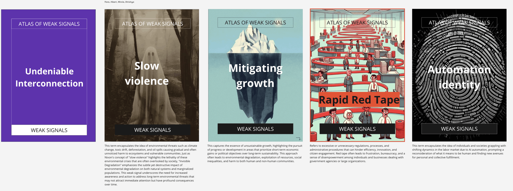
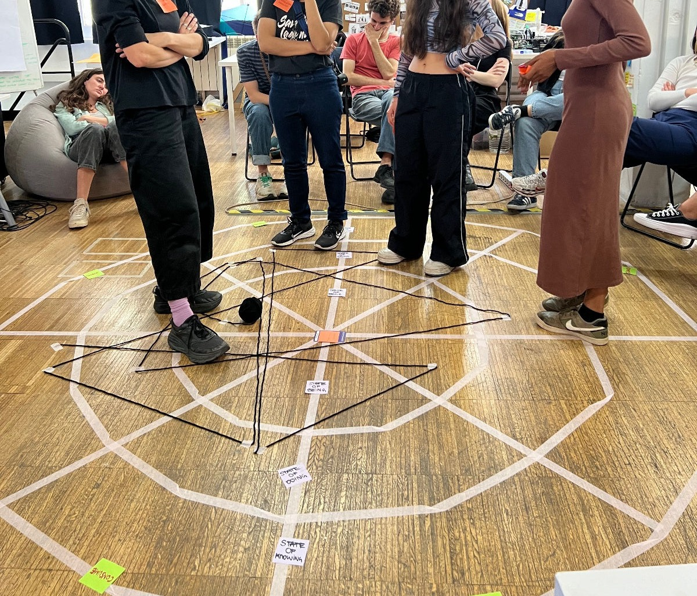

In our recent class focused on design for futures, we engaged in a fascinating activity centered around the ideation and assessment of "weak signals." These weak signals are subtle, emerging changes that might indicate significant shifts in society, technology, or the environment, often overlooked but potentially influential in shaping the future. Our task was to contribute new ideations for updating the "Atlas of Weak Signals" card deck, a tool designed to help users identify and contemplate these nascent trends.
The class began with an introduction to the concept of weak signals and their relevance in futures studies. We explored how these signals, when recognized early, can provide critical insights into potential disruptions or transformations. The instructor provided examples of weak signals from the past that had escalated into significant trends, such as the rise of social media or the shift towards remote work, emphasizing the importance of being attuned to such changes.
Our main activity involved brainstorming potential weak signals that we've noticed in our daily lives, in technology, societal behaviors, or environmental shifts. Each student proposed several ideas, which we then discussed collectively. Examples included the increasing use of augmented reality in education, the normalization of plant-based diets, and the growing concern over digital privacy.
After compiling a diverse list of signals, our next step was to assess these signals by placing them on a conceptual circle divided into three segments: transformation, change, and dismantling. This model helped us analyze the signals in terms of their potential impact on our ways of being, doing, and knowing. For instance, a signal like "augmented reality in education" was placed closer to transformation due to its potential to fundamentally alter educational experiences and knowledge acquisition.
The placement activity was particularly enlightening as it required us to think critically about the trajectory and impact of each signal. It fostered lively discussions about how these weak signals might evolve and their possible implications on future societies. We debated, for example, whether digital privacy concerns would lead to changes in technology use (change) or prompt a complete rethinking of data laws (dismantling).
Reflecting on what I learned from this class, the most striking realization was the power of observation and critical thinking in identifying weak signals. It became clear that being attuned to subtle changes in our environment can equip us with the foresight needed to anticipate and adapt to future challenges. I also appreciated the structured approach to assessing these signals, as it provided a clear framework to evaluate their potential impacts systematically.
What I particularly liked about the class was the collaborative atmosphere and the diversity of perspectives each student brought to the discussion. I liked the absence of constraints where noting is right or wrong. It was intriguing to see how different backgrounds and areas of interest influenced what individuals noticed as emerging signals. This diversity enriched our discussions and expanded my understanding of how various factors could be interpreted as weak signals.
Overall, the class was an eye-opening experience that enhanced my ability to think about the future in a structured yet imaginative way. It underscored the importance of foresight in design and planning and provided practical tools and methodologies for identifying and evaluating weak signals. This activity not only broadened my understanding of futures studies but also sparked a keen interest in continuously scanning for and reflecting on the weak signals in my own environment.

